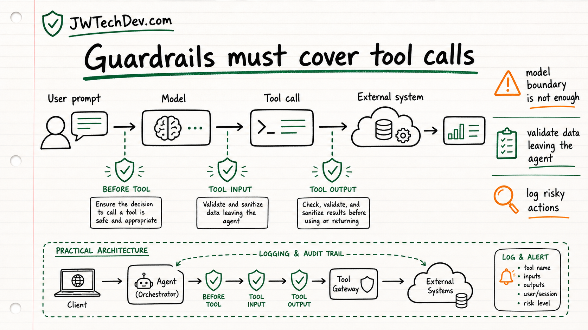

AI agent guardrails need to cover tool calls, not just prompts
Prompt guardrails matter, but agent risk often shows up after the model decides to use a tool.

Quick answer
If your agent can call tools, your guardrails cannot stop at the chat box. The useful mental model is to validate the tool choice, the tool input, and the tool output before the agent turns that information into action.
Why this matters now
Traditional AI safety conversations usually focus on the model boundary: what the user sends in and what the model sends back. Agents make that boundary bigger.
An agent may read files, call APIs, query business systems, or invoke an MCP tool. That means risk can enter through external data, leave through tool input, or come back through a tool result that the model treats as truth.
AWS's recent Bedrock Guardrails and Strands Agents SDK example is useful because it frames guardrails as lifecycle checkpoints instead of a single filter at the end.
The three checkpoint model
Checkpoint one is before the tool call. Ask whether the selected tool is allowed for this user, this workflow, and this task.
Checkpoint two is the tool input. Validate what the agent is about to send out. This is where secrets, private data, unsafe commands, or overly broad parameters can leak.
Checkpoint three is the tool output. Validate what came back before it enters the agent's context. External systems can return stale, malicious, irrelevant, or overprivileged data.
The AWS mental model
The AWS post shows how guardrails can be applied through lifecycle hooks in an agent framework. That is the important part for learners: safety is not just a policy document. It is code placed at the points where an agent changes state or touches a system.
This also connects to cloud security basics. You still need identity, scoped permissions, logs, allowlists, deny rules, and a way to review actions that should not be fully automated.
What builders should do
Build a small tool-calling demo and add logging around every tool call.
Label each tool by risk level: read-only, draft, write, external spend, or human-impacting action.
Add validation before tool input leaves the agent and before tool output enters the next prompt.
Create one approval gate for anything that changes data, spends money, sends a message, or touches production.
Bottom line
AI agents are not safer because the prompt sounds careful. They are safer when the tool path is governed. The tool call is where the agent stops being a text generator and starts acting like infrastructure.
Sources checked
Want the starter kit?
Grab the free JWTechDev.com starter kit if you want a practical way to connect cloud basics, AI workflows, and approval gates.
Get resources